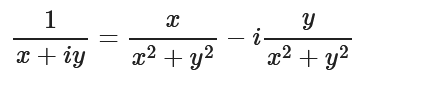
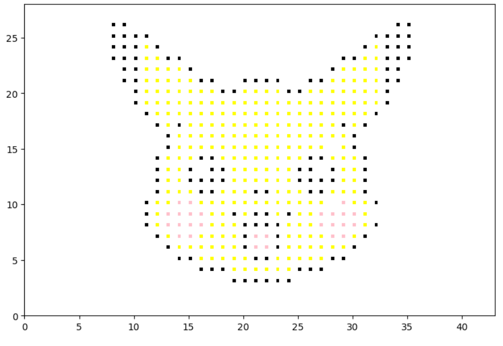
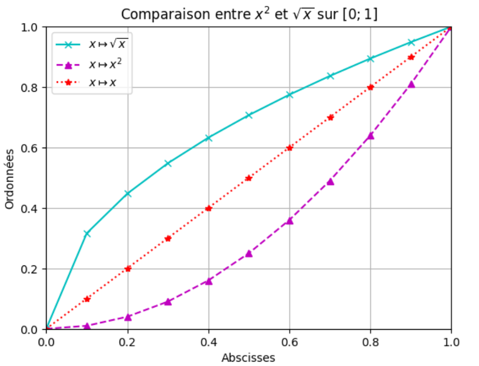
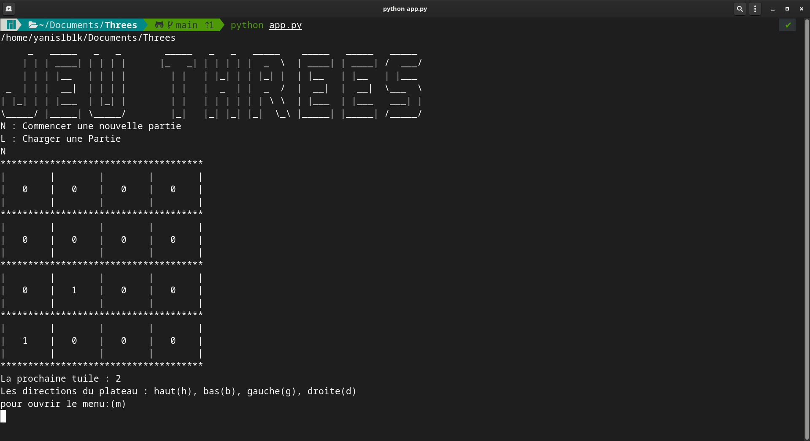

Abdel-Ghani Ghlamallah,
Programmeur génial

Python est un langage de programmation interprété, polyvalent et convivial, apprécié par les développeurs de tous niveaux. Il est conçu pour être simple à lire et à écrire, ce qui en fait un excellent choix pour les débutants en programmation, tout en offrant également une grande puissance et une flexibilité pour les projets plus avancés. Une des caractéristiques principales de Python est sa lisibilité. Son syntaxe est claire et concise, avec un code qui ressemble presque à du pseudocode. Cela facilite la compréhension et la maintenance du code, ainsi que la collaboration entre les membres d'une équipe de développement. Python est un langage polyvalent qui peut être utilisé dans de nombreux domaines. Il est couramment utilisé pour le développement d'applications web, la création de scripts système, l'analyse de données, l'intelligence artificielle, l'apprentissage automatique, l'automatisation des tâches, la création d'interfaces graphiques et bien plus encore. Python dispose d'une vaste bibliothèque standard qui offre un large éventail de fonctionnalités prêtes à l'emploi, réduisant ainsi le temps et les efforts nécessaires pour le développement.

Cliquez pour accéder au projet
Description:
Ces fonctions implémentent le code césar, une méthode de chiffrage sommaire utilisée par Jules César dans ses correspondances afin de les protéger des indiscrets. Le but de ce projet étudiant est l'étude des bases du python.
Bilan:
Un projet étudiant extrêmement simpliste qui pourrait évoluer en l'implémentant dans une interface permettant aux non-informaticiens de chiffrer leurs messages de façon très ergonomique.
Image:

Description:
Ces fonctions permettent d'éffectuer des calculs divers sur des nombres imaginaires. Le but de ce projet étudiant est non seulement l'étude du python mais également des mathématiques.
Bilan:
Un projet étudiant extrêmement simpliste qui pourrait évoluer en l'implémentant dans une interface permettant aux non-informaticiens de faire des calculs sur des nombres imaginaires de façon très ergonomique.
Image:
Description:
Ceci est un template de création de pixel art en python utilisant la libraire MatplotLib et des suites de valeurs pré-établies. Ici, on affiche le pixel art d'une façon stylisée en imprimant les pixels d'un façon spécifique.
Bilan:
Un projet étudiant extrêmement simpliste qui pourrait évoluer en l'implémentant dans une interface permettant aux non-informaticiens de créer leurs propre pixel art de façon très ergonomique. Cela nécessiterait la création d'un outil pour créer les suites de valeurs pré-établies précedement citées.
Image:
Description:
Ceci est un template de création de graphes en python utilisant la libraire MatplotLib.
Bilan:
Un projet étudiant extrêmement simpliste qui pourrait évoluer en l'implémentant dans une interface permettant aux non-informaticiens de créer leurs propres graphes de façon très ergonomique.
Image:
Description:
Le jeu des Threes est un jeu mathématique simple et relativement ludique. C'est un projet étudiant et il a été programmé en python en duo. Le but de ce travail est l'étude des bases du langage ainsi que de la modularité en python
Bilan:
Puisque c'est un projet étudiant, nous avons choisi une approche très scolaire: le produit rendu est fonctionnel et conforme à la consigne, sans aucune fantaisie. Il pourrait sans doute bénéficier d'une amélioration de l'aspect graphique.
Image:

Contactez-moi sur les réseaux suivants :


abdel-ghani.ghlamallah@edu.univ-paris13.fr